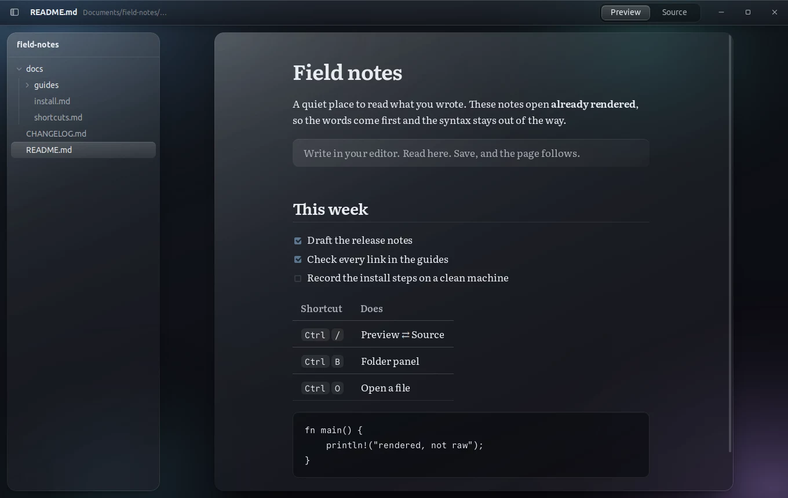
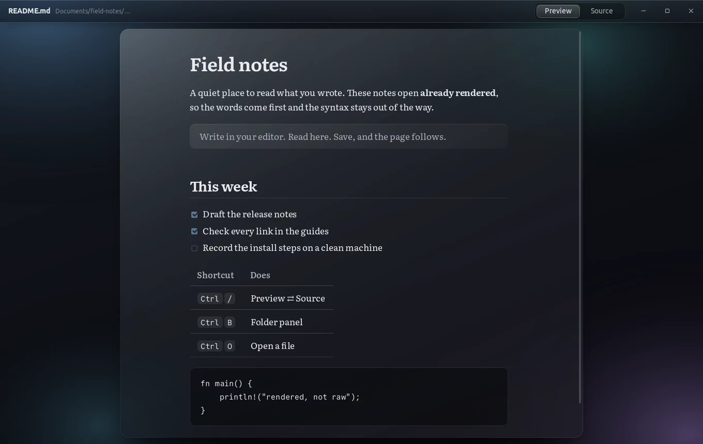
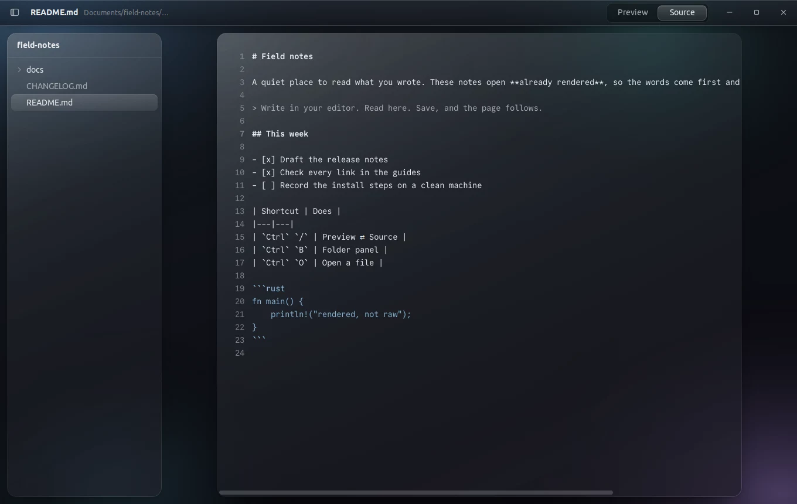

Markdown, already rendered.
mdlens is a quiet dark-glass viewer for your .md files. Double-click one and you are reading it, not its syntax. The source is one key away.

Opens rendered. Stays out of the way.
Your file manager hands mdlens a .md file and it opens as a page: tables, task lists, footnotes, code and images, set in Literata on a single calm column. No editor to wait for, no preview pane to toggle.

The source is one key away.
Press Ctrl / and the same file turns into its read-only source, with line numbers and fenced code picked out. Press it again and you are back where you were.

Small, and thought through.
- Live reload
- Keep writing in your editor. Every save updates the page in place, and your scroll position stays put.
- Folders, like your editor
- Open a folder and a collapsible panel lists its Markdown files, starting at the README. Open a single file and the panel stays away.
- Safe with any file
- Raw HTML inside Markdown stays escaped, so a downloaded README cannot run scripts. Web links open in your browser.
- Every Ubuntu release
- mdlens brings its own browser engine, so one package installs on 20.04, 22.04, 24.04 and newer. Large files stream in, so the window never freezes.
- One window
- Double-click another file and it opens in the window you already have, not a new one.
- Works offline
- Fonts are bundled and nothing phones home. Local images load from the file's own folder.
Install in a minute.
Download the package, install it with apt, and make mdlens the default for Markdown files. After that, a double-click is all it takes.
| Ctrl / | Preview or Source |
| Ctrl O | Open a file |
| Ctrl Shift O | Open a folder |
| Ctrl B | Show or hide the folder panel |
| Ctrl + − 0 | Zoom the page |
# download the latest release $ wget https://github.com/tanim913/mdlens/releases/latest/download/mdlens_0.2.0_amd64.deb # install it $ sudo apt install ./mdlens_0.2.0_amd64.deb # open .md files with mdlens by default $ xdg-mime default mdlens.desktop text/markdown
One package for Ubuntu 20.04, 22.04, 24.04 and newer (64-bit). The download is about 100 MB because mdlens carries its own browser engine. Installing it over 0.1.0 upgrades in place. A Windows installer (preview, not yet tested on Windows) is on the releases page.